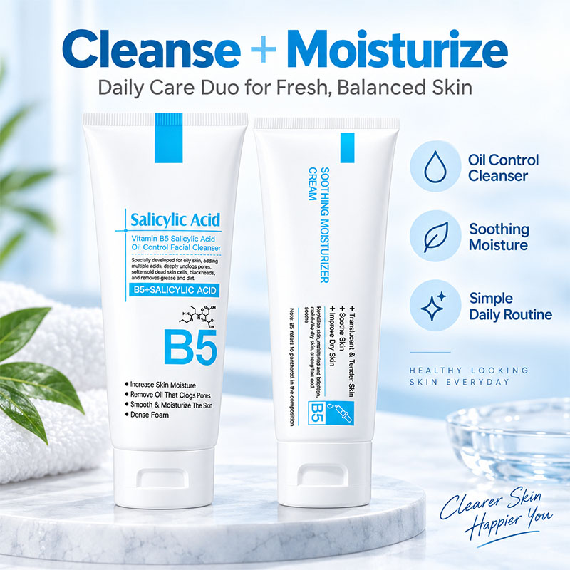
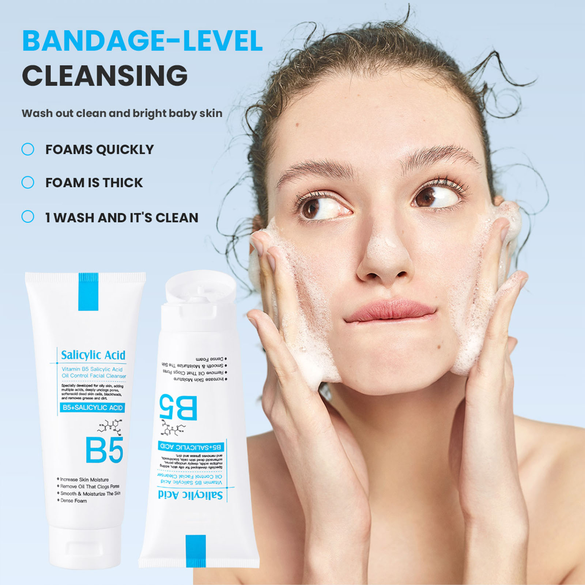
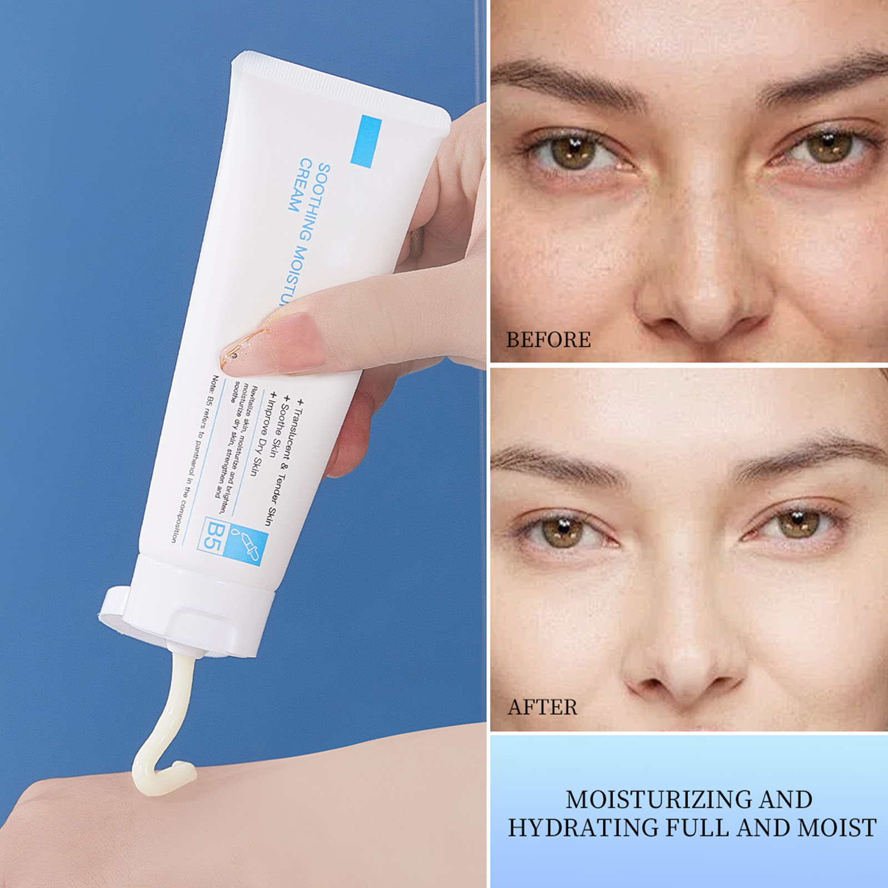
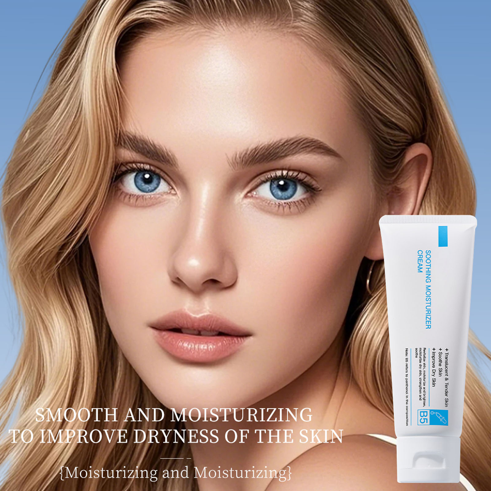

طبيبة جلدية تكشف: لماذا تفشل 90% من علاجات حب الشباب والمسامات الواسعة.. وكيف استطاع "الثنائي المتوازن" (B5 + حمض الساليسيليك) إعادة بناء البشرة خلال 14 يوماً فقط؟
بدون تقشير كيميائي قاسي، وبدون جفاف أو احمرار مزعج، وبأقل من عُشر تكلفة الجلسات العيادية المتكررة — إليكم السر العلمي وراء الروتين الثنائي الذي أحدث ضجة واسعة بين خبراء البشرة.

هل استيقظتِ يوماً أمام المرآة لتجدي جبهتكِ وأنفكِ يلمعان بطبقة زيتية غير مريحة، بينما تملأ المسامات الواسعة والرؤوس السوداء وجنتيكِ، ورغم استخدامكِ لأقوى أنواع الغسولات والمقشرات، تزداد الحبوب احمراراً بعد كل محاولة؟
إذا كانت إجابتكِ نعم، فلستِ وحدك. تشير الإحصاءات السريرية الحديثة إلى أن أكثر من 83% من النساء والرجال الذين يعانون من مشاكل البشرة الدهنية وحب الشباب يتبعون في الواقع روتيناً يؤدي إلى نتائج عكسية تماماً ويؤذي بشرتهم يوماً بعد يوم دون أن يشعروا.
العلم وراء المعادلة الذهبية: حمض الساليسيليك + فيتامين ب5
خلال مؤتمر الأكاديمية الأوروبية للأمراض الجلدية الأخير، ركزت الأبحاث على فكرة ثورية: العلاج الحقيقي لحب الشباب والمسام ليس في الهجوم على البشرة، بل في الموازنة الذكية.
وهنا برز الثنائي الذي وصفه الأطباء بـ "المعادلة الذهبية":
🧪 كيف تعمل التوليفة المزدوجة؟
- 1. حمض الساليسيليك (BHA): على عكس الأحماض المائية الأخرى، يمتلك حمض الساليسيليك قدرة فريدة على الذوبان في الدهون؛ مما يعني أنه يخترق جدران المسام المسدودة، ويذيب الكتل الدهنية المتصلبة وخلايا الجلد الميتة المسببة للرؤوس السوداء والبثور من جذورها.
- 2. فيتامين ب5 (البانثينول Panthenol): هو الحارس المرمم للبشرة؛ فور تنظيف المسام، يتغلغل البانثينول بعمق ليحفز تجدد الأنسجة، ويهدئ الاحمرار والالتهاب فورياً، ويربط جزيئات الماء داخل البشرة ليمنحها مرونة وامتلاءً فائقين دون أن يترك ذرة زيت واحدة على السطح.

الروتين ذو الخطوتين: تنظيف بدون تجفيف + ترطيب بدون لمعان
بدلاً من استخدام 6 أو 7 منتجات معقدة ترهق حاجز بشرتكِ وتكلف مئات الدولارات، يقدم هذا الطقم الطبي حلاً مبسطاً ومتكاملاً في خطوتين يوميتين:
غسول الساليسيليك وفيتامين ب5 الرغوي
يتحول بلمسة ماء بسيطة إلى رغوة كثيفة ناعمة تتغلغل داخل المسامات الواسعة. يزيل الرؤوس السوداء والزيوت المتراكمة والأوساخ العميقة، ويترك البشرة ناعمة ومنتعشة تماماً دون الشعور بجفاف أو شد مؤلم.
كريم الترطيب والتهدئة المركز بـ B5
قوام حريري خفيف فائق الامتصاص؛ لا يسبب أي انسداد للمسامات. يهدئ تهيج البشرة واحمرار البثور فورياً، ويعيد بناء خط الدفاع الأول للبشرة لتبدو ممتلئة، ناعمة، ومشرقة بإشراقة زجاجية صحية.

اسحبي لمشاهدة التحول السريري على المسام والزيوت
صورة حقيقية لمريضة (26 عاماً) تعاني من مسامات متسعة ولمعان دهني قبل وبعد 14 يوماً من الاستخدام المنتظم

قبل: زيوت ومسامات واسعة بعد: صفاء ونضارة متوازنةاضغطي على حالتكِ لرؤية بروتوكول الاستخدام الطبي المخصص لكِ:
بروتوكول البشرة الدهنية والمسامات الواسعة
استخدمي الغسول مرتين يومياً (صباحاً ومساءً) مع التركيز لمدة 60 ثانية على منطقة الـ T-Zone وحول الأنف لتفكيك الدهون المتراكمة. بعد التجفيف بلطف، طبقي الكريم المرطب بـ B5 فوراً لمنع تحفيز إفراز دهون إضافية.
يوميات التجربة السريرية: ما الذي يحدث لبشرتكِ يوماً بيوم؟
نظافة حريرية بدون شد مؤلم
من أول غسلة، تلاحظين كيف تزول طبقة الدهون المزعجة تماماً. والأهم: عند لمس وجنتيكِ بعد التجفيف، لا يوجد ذلك الشعور الجاف المؤلم أو الرغبة في الحكة، بفضل جرعة البانثينول المهدئة.
مكياج يدوم طوال اليوم دون تكتل
تستيقظين في الصباح وتجدين جبهتكِ هادئة وغير دهنية. تتراجع الحبوب النشطة تحت الجلد بشكل ملحوظ، ويبدأ احمرار الوجه بالانحسار بفضل تقوية الجدار الدهني الواقي.
أنف صافٍ ومسامات تبدو كأنها اختفت
مع استمرار حمض الساليسيليك في إذابة الزيوت القديمة داخل القنوات المسامية، تنظف المسامات بالكامل وتستعيد مرونتها الطبيعية فتبدو أصغر حجماً وأقل وضوحاً تحت الضوء الطبيعي.
توقف الحبوب الجديدة تماماً
أصبح حاجز بشرتكِ الآن في قمة صحته وقوته؛ بشرة نضرة، مرنة، مشرقة، ولا تحتاجين إلى كريمات الأساس الثقيلة لإخفاء العيوب أو البودرة لامتصاص اللمعان.

مقارنة سريرية: كيف يتفوق هذا الروتين على البدائل؟
| المعيار الطبي | طقم B5 + ساليسيليك الثنائي | المقشرات الكيميائية القاسية | الماركات الفاخرة ($120+) |
|---|---|---|---|
| حماية حاجز البشرة (Skin Barrier) | ترميم فوري بـ B5 | يدمر الحاجز ويجففه | ترطيب سطحي فقط |
| تنظيف عميق داخل المسام (BHA) | إذابة الدهون من الجذور | فعال لكن مؤلم ومقشر | كريمات ثقيلة تسد المسام |
| آمن للبشرة الحساسة يومياً | معادلة لطيفة ومتوازنة | يسبب حروقاً واحمراراً | يحتوي عطوراً مهيجة |
| منع إفراز الزيوت الارتدادي | تنظيم توازن الإفراز | يزيد الزيوت 3 أضعاف | يترك طبقة زيتية دهنية |
| التكلفة الاقتصادية | أقل من $15 للطقم كامل | جلسات مكلفة ($80+) | $120 - $200 للعلبة |
احصلي على طقم العناية الثنائي (B5 + ساليسيليك)
غسول تنظيف المسام الرغوي (100g) + كريم الترميم والتهدئة بـ B5 (100g)
آراء وتجارب موثقة من قارئاتنا ومستخدمي الطقم (4.9 / 5.0)
★★★★★“كنت أعاني مع بشرتي الدهنية في حرارة الصيف، المكياج يذوب بعد ساعتين والمسام واسعة حول أنفي. جربت غسولات صيدلية كثيرة أغلبها نشف بشرتي وخلاها تقشر. هذا الغسول بالساليسيليك مع كريم B5 سحر حقيقي! رغوة الغسول ناعمة جداً والكريم يرطب بدون أي لمعة زيتية. خلال أسبوعين خفت الدهون بنسبة 80% والرؤوس السوداء اختفت تقريباً!”
“أعجبني جداً توازن المكونات. عادة حمض الساليسيليك يسبب لي وخز خفيف، لكن وجود فيتامين ب5 مع كريم الترطيب هدأ بشرتي تماماً ولم يسبب أي احمرار. الحبوب الصغيرة تحت الجلد اختفت وملمس بشرتي صار ناعم كالحرير. طلبته لجميع صديقاتي.”
“سعره بالمقارنة بماركات الصيدلية الفرنسية يعتبر فرصة لا تصدق! الحجمين كبار (100 جرام لكل عبوة) ويكفون شهرين وأكثر. المسامات الواسعة على الوجنتين أصبحت شبه غير مرئية حتى بدون فاونديشن.”
الأسئلة الشائعة من القراء
نعم، بكل تأكيد. تم تصميم هذه التركيبة خصيصاً مع تركيز مدروس من حمض الساليسيليك مدعوماً بجرعة علاجية من البانثينول (فيتامين ب5). هذا التوازن يحمي حاجز البشرة ويمنع حدوث الجفاف أو التقشير الحارق الذي تسببه المنتجات التجارية القاسية.
من اليوم الأول ستلاحظين زوال اللمعان الدهني وانتعاش البشرة. خلال 7 إلى 10 أيام يقل احمرار البثور وتتراجع الإفرازات الزيتية المزعجة. بحلول الأسبوع الثاني أو الثالث تصبح المسامات الواسعة أضيق وأنظف والرؤوس السوداء قد تلاشت تقريباً.
لا على الإطلاق. يتميز الكريم بقوام مائي-هلامي سريع الامتصاص (Non-Comedogenic)، يمتصه الجلد في غضون 30 ثانية تاركاً لمسة نهائية مخملية وملمساً ناعماً تماماً دون أي طبقة لزجة، وهو مثالي للاستخدام قبل المكياج أو واقي الشمس.
يأتي الغسول والكريم بحجم كبير سخي (100 غرام لكل منهما). نظراً لأن كمية بحجم حبة البازلاء كافية لكل استخدام، فإن الطقم الواحد يدوم ما بين 6 إلى 8 أسابيع من الاستخدام اليومي المنتظم صباحاً ومساءً.
نقدم ضمان رضا كامل بنسبة 100% لمدة 30 يوماً. إذا استخدمتِ الطقم ولم تشعري بفرق ملموس في توازن بشرتكِ ونظافة مساماتكِ، يمكنكِ طلب استرجاع المبلغ بكل بساطة ودون أي أسئلة معقدة.